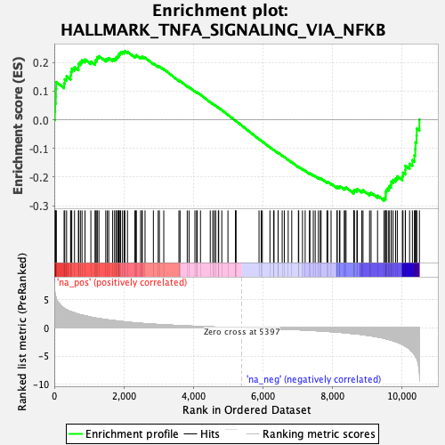
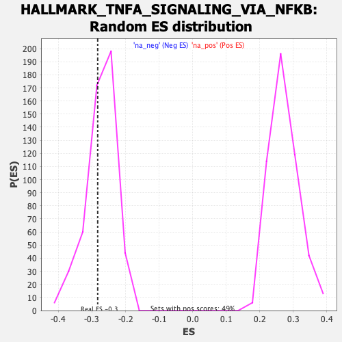

| Dataset | qlf.KOd4vsWTd4_gsea_score |
| Phenotype | NoPhenotypeAvailable |
| Upregulated in class | na_neg |
| GeneSet | HALLMARK_TNFA_SIGNALING_VIA_NFKB |
| Enrichment Score (ES) | -0.282944 |
| Normalized Enrichment Score (NES) | -1.0355347 |
| Nominal p-value | 0.34901962 |
| FDR q-value | 0.52501345 |
| FWER p-Value | 1.0 |

| SYMBOL | RANK IN GENE LIST | RANK METRIC SCORE | RUNNING ES | CORE ENRICHMENT | |
|---|---|---|---|---|---|
| 1 | SIK1 | 17 | 6.481 | 0.0292 | No |
| 2 | B4GALT5 | 25 | 5.968 | 0.0570 | No |
| 3 | IL18 | 43 | 5.543 | 0.0818 | No |
| 4 | CD83 | 47 | 5.451 | 0.1075 | No |
| 5 | PTGER4 | 56 | 5.362 | 0.1322 | No |
| 6 | MARCKS | 282 | 3.476 | 0.1271 | No |
| 7 | REL | 301 | 3.412 | 0.1416 | No |
| 8 | NR4A3 | 354 | 3.225 | 0.1520 | No |
| 9 | SOD2 | 469 | 2.908 | 0.1549 | No |
| 10 | NAMPT | 481 | 2.882 | 0.1675 | No |
| 11 | NFKB2 | 503 | 2.830 | 0.1790 | No |
| 12 | IL7R | 582 | 2.663 | 0.1842 | No |
| 13 | TNFRSF9 | 697 | 2.430 | 0.1847 | No |
| 14 | RIPK2 | 699 | 2.424 | 0.1962 | No |
| 15 | BHLHE40 | 751 | 2.328 | 0.2024 | No |
| 16 | NFKB1 | 798 | 2.260 | 0.2087 | No |
| 17 | NFAT5 | 883 | 2.152 | 0.2109 | No |
| 18 | DUSP4 | 1052 | 1.900 | 0.2037 | No |
| 19 | EHD1 | 1174 | 1.753 | 0.2004 | No |
| 20 | MYC | 1183 | 1.748 | 0.2080 | No |
| 21 | PMEPA1 | 1225 | 1.703 | 0.2121 | No |
| 22 | PHLDA1 | 1236 | 1.692 | 0.2192 | No |
| 23 | FUT4 | 1284 | 1.644 | 0.2225 | No |
| 24 | IL15RA | 1480 | 1.470 | 0.2107 | No |
| 25 | MAP2K3 | 1526 | 1.432 | 0.2132 | No |
| 26 | TRIP10 | 1566 | 1.399 | 0.2161 | No |
| 27 | TSC22D1 | 1679 | 1.314 | 0.2116 | No |
| 28 | TNFSF9 | 1733 | 1.275 | 0.2126 | No |
| 29 | DUSP2 | 1776 | 1.245 | 0.2144 | No |
| 30 | NINJ1 | 1787 | 1.236 | 0.2194 | No |
| 31 | DUSP5 | 1827 | 1.204 | 0.2213 | No |
| 32 | CDKN1A | 1852 | 1.182 | 0.2247 | No |
| 33 | TNF | 1857 | 1.180 | 0.2299 | No |
| 34 | ABCA1 | 1889 | 1.160 | 0.2324 | No |
| 35 | CCRL2 | 1908 | 1.145 | 0.2361 | No |
| 36 | TRIB1 | 1962 | 1.105 | 0.2363 | No |
| 37 | EIF1 | 2010 | 1.073 | 0.2369 | No |
| 38 | ID2 | 2030 | 1.056 | 0.2401 | No |
| 39 | PDLIM5 | 2105 | 1.005 | 0.2377 | No |
| 40 | IRF1 | 2314 | 0.889 | 0.2219 | No |
| 41 | NR4A2 | 2346 | 0.874 | 0.2231 | No |
| 42 | ETS2 | 2360 | 0.868 | 0.2260 | No |
| 43 | MAP3K8 | 2482 | 0.812 | 0.2182 | No |
| 44 | IFIH1 | 2524 | 0.789 | 0.2180 | No |
| 45 | TANK | 2529 | 0.787 | 0.2213 | No |
| 46 | CD44 | 2610 | 0.754 | 0.2172 | No |
| 47 | CXCL10 | 2850 | 0.650 | 0.1973 | No |
| 48 | RELB | 2989 | 0.600 | 0.1868 | No |
| 49 | NFKBIE | 3023 | 0.588 | 0.1865 | No |
| 50 | DNAJB4 | 3149 | 0.545 | 0.1770 | No |
| 51 | KDM6B | 3585 | 0.404 | 0.1370 | No |
| 52 | PLEK | 3617 | 0.394 | 0.1359 | No |
| 53 | LITAF | 3824 | 0.336 | 0.1176 | No |
| 54 | ICAM1 | 3876 | 0.323 | 0.1142 | No |
| 55 | GCH1 | 4045 | 0.277 | 0.0994 | No |
| 56 | YRDC | 4095 | 0.265 | 0.0959 | No |
| 57 | RNF19B | 4110 | 0.262 | 0.0958 | No |
| 58 | LIF | 4205 | 0.240 | 0.0879 | No |
| 59 | NR4A1 | 4486 | 0.172 | 0.0617 | No |
| 60 | SLC16A6 | 4558 | 0.152 | 0.0556 | No |
| 61 | PFKFB3 | 4603 | 0.144 | 0.0520 | No |
| 62 | RCAN1 | 4642 | 0.137 | 0.0490 | No |
| 63 | ATF3 | 4719 | 0.120 | 0.0423 | No |
| 64 | TNIP1 | 4729 | 0.118 | 0.0420 | No |
| 65 | TLR2 | 4818 | 0.103 | 0.0340 | No |
| 66 | IER5 | 4995 | 0.070 | 0.0173 | No |
| 67 | CD69 | 5212 | 0.033 | -0.0033 | No |
| 68 | CCL5 | 5220 | 0.032 | -0.0039 | No |
| 69 | TRAF1 | 5225 | 0.031 | -0.0041 | No |
| 70 | PER1 | 5889 | -0.078 | -0.0676 | No |
| 71 | BIRC3 | 5952 | -0.089 | -0.0732 | No |
| 72 | IFNGR2 | 5984 | -0.094 | -0.0757 | No |
| 73 | GEM | 6203 | -0.135 | -0.0961 | No |
| 74 | FOSB | 6307 | -0.156 | -0.1053 | No |
| 75 | CCL4 | 6321 | -0.159 | -0.1058 | No |
| 76 | DENND5A | 6437 | -0.186 | -0.1160 | No |
| 77 | MAFF | 6438 | -0.186 | -0.1151 | No |
| 78 | SLC2A3 | 6555 | -0.211 | -0.1253 | No |
| 79 | NFKBIA | 6616 | -0.228 | -0.1300 | No |
| 80 | STAT5A | 6728 | -0.257 | -0.1395 | No |
| 81 | TGIF1 | 6830 | -0.282 | -0.1478 | No |
| 82 | CFLAR | 7021 | -0.336 | -0.1646 | No |
| 83 | CLCF1 | 7031 | -0.337 | -0.1638 | No |
| 84 | PLK2 | 7139 | -0.368 | -0.1724 | No |
| 85 | MCL1 | 7216 | -0.389 | -0.1779 | No |
| 86 | CCNL1 | 7339 | -0.432 | -0.1876 | No |
| 87 | TNFAIP8 | 7352 | -0.436 | -0.1866 | No |
| 88 | ZC3H12A | 7450 | -0.469 | -0.1938 | No |
| 89 | TNFAIP3 | 7505 | -0.494 | -0.1966 | No |
| 90 | KLF6 | 7596 | -0.528 | -0.2028 | No |
| 91 | EGR3 | 7649 | -0.550 | -0.2052 | No |
| 92 | GADD45A | 7674 | -0.561 | -0.2048 | No |
| 93 | GADD45B | 7843 | -0.629 | -0.2180 | No |
| 94 | MXD1 | 7866 | -0.638 | -0.2171 | No |
| 95 | IER2 | 7961 | -0.679 | -0.2229 | No |
| 96 | PNRC1 | 8134 | -0.754 | -0.2359 | No |
| 97 | DUSP1 | 8135 | -0.755 | -0.2323 | No |
| 98 | SAT1 | 8203 | -0.792 | -0.2350 | No |
| 99 | LDLR | 8215 | -0.796 | -0.2323 | No |
| 100 | JUNB | 8340 | -0.862 | -0.2401 | No |
| 101 | IL6ST | 8366 | -0.881 | -0.2383 | No |
| 102 | SNN | 8392 | -0.909 | -0.2364 | No |
| 103 | B4GALT1 | 8614 | -1.037 | -0.2528 | No |
| 104 | BTG2 | 8615 | -1.038 | -0.2478 | No |
| 105 | PPP1R15A | 8633 | -1.048 | -0.2445 | No |
| 106 | KLF10 | 8704 | -1.091 | -0.2460 | No |
| 107 | TIPARP | 8716 | -1.099 | -0.2418 | No |
| 108 | BTG1 | 8843 | -1.193 | -0.2483 | No |
| 109 | PTPRE | 8880 | -1.220 | -0.2459 | No |
| 110 | BIRC2 | 9068 | -1.377 | -0.2574 | No |
| 111 | RELA | 9112 | -1.422 | -0.2548 | No |
| 112 | FOS | 9298 | -1.617 | -0.2649 | No |
| 113 | NFE2L2 | 9486 | -1.852 | -0.2741 | Yes |
| 114 | TNIP2 | 9529 | -1.916 | -0.2690 | Yes |
| 115 | TUBB2A | 9531 | -1.918 | -0.2600 | Yes |
| 116 | IRS2 | 9533 | -1.921 | -0.2509 | Yes |
| 117 | TAP1 | 9554 | -1.969 | -0.2435 | Yes |
| 118 | ATP2B1 | 9606 | -2.054 | -0.2386 | Yes |
| 119 | PANX1 | 9634 | -2.093 | -0.2312 | Yes |
| 120 | GPR183 | 9688 | -2.193 | -0.2259 | Yes |
| 121 | KLF2 | 9693 | -2.207 | -0.2158 | Yes |
| 122 | IFIT2 | 9746 | -2.319 | -0.2097 | Yes |
| 123 | JUN | 9818 | -2.465 | -0.2048 | Yes |
| 124 | F2RL1 | 9866 | -2.554 | -0.1972 | Yes |
| 125 | EGR1 | 10012 | -2.936 | -0.1972 | Yes |
| 126 | PDE4B | 10029 | -2.981 | -0.1845 | Yes |
| 127 | SMAD3 | 10096 | -3.244 | -0.1754 | Yes |
| 128 | BCL3 | 10100 | -3.255 | -0.1602 | Yes |
| 129 | SQSTM1 | 10219 | -3.778 | -0.1536 | Yes |
| 130 | ZFP36 | 10300 | -4.298 | -0.1408 | Yes |
| 131 | SGK1 | 10359 | -4.746 | -0.1238 | Yes |
| 132 | EGR2 | 10383 | -4.986 | -0.1023 | Yes |
| 133 | DDX58 | 10390 | -5.031 | -0.0789 | Yes |
| 134 | BCL6 | 10420 | -5.342 | -0.0562 | Yes |
| 135 | SPSB1 | 10426 | -5.455 | -0.0307 | Yes |
| 136 | SOCS3 | 10502 | -8.081 | 0.0006 | Yes |
